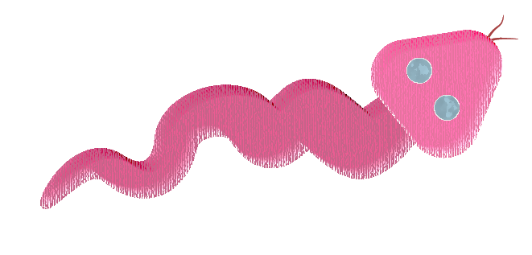
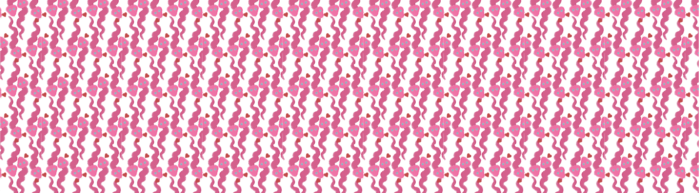
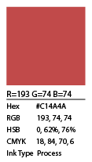
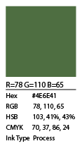
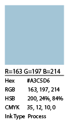
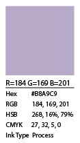
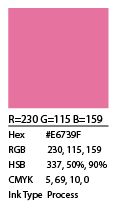
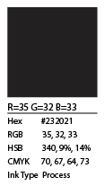
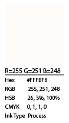

Home
Guaraci
Jaci
Tupã
Rudá
"Rudá, é o deus do amor na mitologia Tupi-Guarani. Sua função é promover a perpetuação de todas as criaturas, despertando o amor no coração dos homens.
Ele é auxiliado por Cairé, a lua cheia e Catiti, a lua nova. Rudá também é auxiliado por uma serprente cuja função é reconhecer as moças que se mantém virgens e devorar aquelas que perderam a virgindade.
As índias cantam canções para o deus em busca de maridos."
Fonte


Para esta estampa, usei formas básicas e efeitos para criar uma cobra estilizada que é o foco principal, representando Rudá. A paleta de cores, em tons de rosa e vermelho, foi escolhida para simbolizar seu domínio sobre o amor, o desejo e a paixão. A forma sinuosa da cobra busca capturar a fluidez do afeto e da sedução que ele inspira nos corações.







